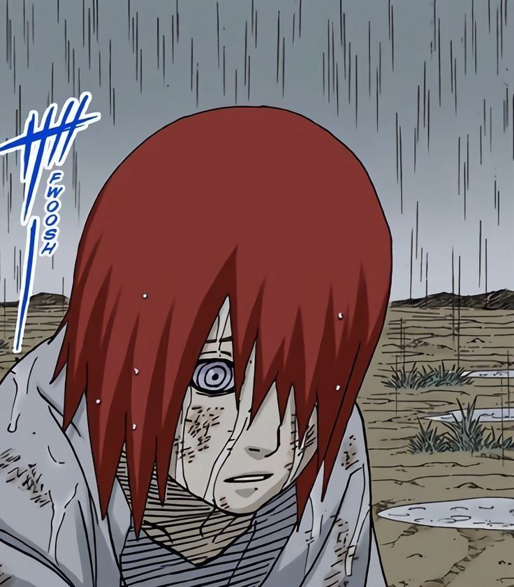
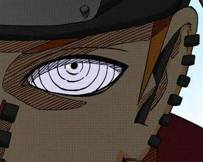

Inicio:
Pain (ペイン, Pein) fue el líder de Akatsuki y el rostro público de la organización. Su verdadero nombre era Nagato, y llevaba el anillo "Cero" (零, Rei) en el pulgar derecho. Aunque era conocido como Pain, este nombre representaba a los Seis Caminos de Pain, seis cuerpos controlados por Nagato a través del Rinnegan. Su compañera más cercana fue Konan, quien lo apoyó incondicionalmente en su búsqueda de la paz a través del dolor.

Historia:
Nagato nació en Amegakure (Aldea de la Lluvia) durante una época de guerra. Tras la muerte de sus padres a manos de ninjas de Konoha, se unió a Yahiko y Konan, formando un grupo que buscaba la paz en su aldea devastada. Fue entrenado por Jiraiya, quien le enseñó técnicas ninja y le inculcó valores de justicia. Sin embargo, tras la muerte de Yahiko a manos de Hanzo y Danzō, Nagato adoptó la identidad de Pain y se convirtió en el líder de Akatsuki, creyendo que solo el dolor podía unir al mundo.
Pain lideró el ataque a Konoha, destruyendo la aldea en busca de Naruto Uzumaki, a quien consideraba clave para su plan. Sin embargo, tras ser derrotado por Naruto y confrontado con sus ideales, Nagato se redimió y usó su técnica de resurrección para revivir a los habitantes de Konoha, sacrificando su vida en el proceso.
Habilidades:
Todas las habilidades de Pain giran en torno al Rinnegan, uno de los tres grandes dōjutsu. Este poder le permitía controlar los Seis Caminos de Pain, cada uno con habilidades únicas. El Camino Deva, el más destacado, podía manipular la gravedad, utilizando técnicas como el Shinra Tensei (repulsión universal) y el Chibaku Tensei (creación de una esfera gravitatoria). El Camino Asura se especializaba en combate cuerpo a cuerpo con armas mecánicas, mientras que el Camino Humano podía extraer almas y leer mentes. El Camino Animal invocaba criaturas poderosas, el Camino Preta absorbía chakra y técnicas ninja, y el Camino Naraka podía revivir a los demás cuerpos de Pain.
